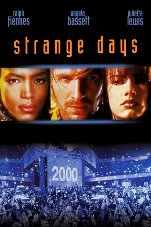

#2761 Strange Days
 
 IMDB-Wertung: 7.2 / 10
IMDB-Wertung: 7.2 / 10  Metascore: 0
Metascore: 0 
Kurz vor dem Millennium hält sich der Ex-Cop Lenny Nero mit dem dealen von Squids über Wasser. Squids sind kleine Discs, auf denen Gefühle anderer Personen aufgezeichnet sind. Diese ermöglichen es den Konsumenten Sportarten, Raubüberfälle und sogar Sex so nachzuempfinden, als würde sie diese selbst ausüben. Doch als Lenny eine Disc in die Hände fällt, die den Mord an einer Prostituierten enthält, beginnt er auf eigene Faust zu ermitteln und gerät so schnell in einen Sog der Gewalt
Jahr: 1995
Dauer: 145 Minuten
FSK: 16
Land: USA Studio: 20th Century FoxTonspuren: DTS - ,
Untertitel:
Auflösung: 1080p (1920x816) Größe: 11366 MB
Genre: Action, Thriller, Drama, Sci-Fi, Krimi
Regisseur:  Kathryn Bigelow
Kathryn Bigelow
Drehbuch: James Cameron, James Cameron, Jay Cocks
Soundtrack: Graeme Revell
Darsteller:
 Ralph Fiennes als Lenny Nero
Ralph Fiennes als Lenny Nero Angela Bassett als Lornette 'Mace' Mason
Angela Bassett als Lornette 'Mace' Mason Juliette Lewis als Faith Justin
Juliette Lewis als Faith Justin Tom Sizemore als Max Peltier
Tom Sizemore als Max Peltier Michael Wincott als Philo Gant
Michael Wincott als Philo Gant Vincent D'Onofrio als Burton Steckler
Vincent D'Onofrio als Burton Steckler Glenn Plummer als Jeriko One
Glenn Plummer als Jeriko One Richard Edson als Tick
Richard Edson als Tick William Fichtner als Dwayne Engelman
William Fichtner als Dwayne Engelman Josef Sommer als Palmer Strickland
Josef Sommer als Palmer Strickland Joe Urla als Keith
Joe Urla als Keith Nicky Katt als Joey Corto
Nicky Katt als Joey Corto Michael Jace als Wade Beemer
Michael Jace als Wade Beemer- David Carrera als Duncan
- Todd Graff als Tex Arcana
 Rio Hackford als Bobby the Bartender
Rio Hackford als Bobby the Bartender- Brook Susan Parker als Cecile
- Dex Elliott Sanders als Curtis
 Paulo Tocha als Spaz Diaz
Paulo Tocha als Spaz Diaz- Art Chudabala als Thai Restaurant Owner
- Ray Chang als Thai Restaurant Cook
- Chris Douridas als Talk Radio Host
- Lisa Picotte als Lori from Encino
- Stefan Arngrim als Skinner
 Kelly Hu als Anchor Woman
Kelly Hu als Anchor Woman- Honey Labrador als Beach Beauty
- James Acheson als Cop in Bathroom
- Yan Birch als New Years Eve Party Dude , uncredited
 Sebastian Feldman als Club Goer , uncredited
Sebastian Feldman als Club Goer , uncredited- Joe Martinez als New Years Rocker , uncredited
- Brigitte Bako als Iris
- Louise LeCavalier als Cindy 'Vita' Minh
 Jim Ishida als Mr. Fumitsu
Jim Ishida als Mr. Fumitsu- Malcolm Norrington als Replay
- Anais Munoz als Diamanda
- Ted Haler als Tow Truck Driver
- Brandon Hammond als Zander
- Donald 'Donnie' Young als Young Zander
- B.J. Crockett als Young Zander
- Ronnie Willis als Homeboy
- David Packer als Lane
- James M. Muro als Nervous POV
- Ron Young als Nervous POV Voice
- Erica Kelly als Restaurant Hostess
- Marlana Young als Waitress
- Raul Reformina als Busboy
- Billie Worley als Dan from Silverlake
- Amon Bourne als Dewayne
- Kylie Ireland als Stoned Looking Girl
- Dru Berrymore als Stoned Girl's Lover
Datei: X:\1995\Strange Days (1995, FSK16, 1920x816).mkv seit 14.12.2015
Festplatte: HD 1992-1995
 Es gibt insgesamt 85 Filme in der Gruppe '1995'
Es gibt insgesamt 85 Filme in der Gruppe '1995'